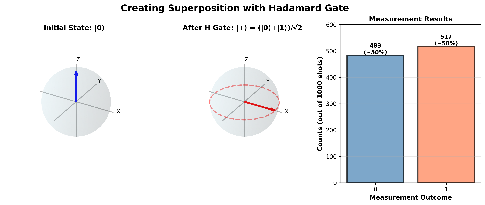

Quantum Mechanics Basics¶
Time: 30 minutes | Difficulty: 🟡 Intermediate
Overview¶
Quantum computing is built on the principles of quantum mechanics - the physics that governs the behavior of atoms, electrons, and photons. Don't worry! You don't need a physics degree. We'll cover just enough quantum mechanics to understand how quantum computers work.
What you'll learn: - Wave-particle duality (things can be both!) - Superposition (being in multiple states at once) - The measurement problem (observing changes everything) - Why quantum mechanics is weird but predictable
A Quick History: Why Do We Need Quantum Mechanics?¶
Classical Physics Failed¶
In the early 1900s, physicists had a problem. Classical physics (Newton's laws, Maxwell's electromagnetism) worked perfectly for everyday objects but completely broke down at atomic scales.
Experiments that didn't make sense:
1. Blackbody Radiation (1900) - Classical prediction: Infinite energy from hot objects - Reality: Finite energy, specific spectrum - Solution: Max Planck proposed energy comes in discrete "quanta"
2. Photoelectric Effect (1905) - Light hitting metal releases electrons - Classical prediction: Brighter light → more energetic electrons - Reality: Higher frequency light → more energetic electrons - Solution: Einstein proposed light comes in particles (photons)
3. Atomic Spectra - Atoms emit light at specific frequencies only - Classical prediction: Continuous spectrum - Reality: Discrete lines - Solution: Bohr proposed quantized energy levels
The revolution: Between 1900-1930, quantum mechanics was born. Strange, counterintuitive, but incredibly accurate.
Core Concept 1: Wave-Particle Duality¶
Things Are Both Waves AND Particles¶
This is the foundation of quantum weirdness.
Classical world: - Waves: Sound, ocean waves, light (we thought) - Particles: Billiard balls, baseballs, electrons (we thought) - Never both!
Quantum world: - Everything has both wave and particle properties - Light acts like a wave (interference) AND like particles (photoelectric effect) - Electrons act like particles (cathode rays) AND like waves (diffraction)
The Double-Slit Experiment¶
This is THE iconic quantum experiment that shows wave-particle duality.
Setup:
What Happens:
Scenario 1: Shoot electrons one at a time - Each electron hits screen at one point (particle behavior) - Over time, an interference pattern emerges (wave behavior) - Interpretation: Each electron goes through both slits as a wave!
Scenario 2: Watch which slit the electron goes through - Put detectors at the slits - Interference pattern disappears! - Electrons behave like classical particles - Interpretation: Observation changes the behavior!
Mind-blowing implication: The electron "knows" if you're watching and changes its behavior accordingly.
Mathematical Description¶
De Broglie Wavelength:
Every particle has an associated wavelength:
λ = h / p
where:
λ = wavelength
h = Planck's constant (6.626 × 10⁻³⁴ J·s)
p = momentum (mass × velocity)
Examples:
Baseball (0.145 kg at 40 m/s):
Way too small to detect - acts classical!Electron (9.109 × 10⁻³¹ kg at 10⁶ m/s):
Comparable to atomic sizes - quantum effects matter!Key insight: Small, light particles have measurable wavelengths. This is why quantum effects dominate at atomic scales.
Core Concept 2: Superposition¶
Being in Multiple States Simultaneously¶
In classical physics, things are in definite states: - Light switch: ON or OFF - Cat: ALIVE or DEAD - Coin: HEADS or TAILS
In quantum mechanics, things can be in superposition - multiple states at once.
What Is Superposition?¶
Mathematical definition:
If |ψ₁⟩ and |ψ₂⟩ are valid quantum states, then:
is also a valid state!
Where: - α and β are complex numbers (amplitudes) - |α|² + |β|² = 1 (probabilities must sum to 1) - |α|² = probability of measuring state ψ₁ - |β|² = probability of measuring state ψ₂
Physical interpretation:
The system isn't in state ψ₁ OR ψ₂. It's in BOTH states simultaneously until measured!
Analogies (All Imperfect!)¶
1. Spinning Coin
Flip a coin and catch it with your hand closed: - Classical view: It's heads or tails, you just don't know - Quantum view: It's genuinely both until you look
2. Schrodinger's Cat (The Famous Thought Experiment)
A cat in a box with a quantum poison mechanism: - 50% chance the mechanism triggers (cat dies) - 50% chance it doesn't (cat lives)
Before opening the box: - Classical: Cat is either alive or dead, we just don't know - Quantum: Cat is in superposition: (|alive⟩ + |dead⟩)/√2
Why this is confusing: We never see macroscopic superpositions! This is because of decoherence (more later).
Real Example: Electron Spin¶
Electrons have a property called "spin": - Measured along any axis: UP or DOWN - Before measurement: superposition of both!
This is exactly what a qubit is! (More in the next section)

Figure 1: Creating superposition with a Hadamard gate. Starting from the definite state |0⟩ at the north pole of the Bloch sphere, applying H creates an equal superposition |+⟩ = (|0⟩ + |1⟩)/√2 on the equator. The measurement histogram shows the 50-50 distribution when measuring in the computational basis.
Superposition ≠ Uncertainty¶
Common misconception: "The electron is up or down, we just don't know which."
Reality: The electron is genuinely in both states. We can prove this with interference experiments!
Proof: If it were just uncertainty, we wouldn't see interference patterns. But we do!
Core Concept 3: Quantum Measurement¶
Observing Changes Everything¶
This is perhaps the most counterintuitive aspect of quantum mechanics.
The Measurement Problem¶
Before measurement:
During measurement:
|ψ⟩ → |0⟩ with probability |α|²
|ψ⟩ → |1⟩ with probability |β|²
System "collapses" to one definite state
After measurement:
Key Properties of Measurement¶
1. Probabilistic - You can't predict which outcome you'll get - You can only calculate probabilities - Run experiment many times → statistics match predictions
2. Irreversible - Measurement destroys superposition - Can't "unmeasure" and restore the state - This is called wave function collapse
3. Basis-Dependent - Choice of measurement affects results - Measuring in different "directions" gives different information - Like asking "How tall?" vs "How heavy?" - different questions!
Born Rule¶
The fundamental rule for measurement probabilities:
If |ψ⟩ = α|0⟩ + β|1⟩, then:
Example:
This state gives equal probability for 0 and 1.
The Observer Effect¶
Important: The "observer" doesn't need to be conscious!
What causes collapse: - Any interaction with the environment - Photon bouncing off the system - Heat exchange - Basically any information leakage
This is why: - Quantum computers need extreme isolation (vacuum, cold temperature) - Quantum effects don't appear in everyday life (too much environment interaction) - Building quantum computers is hard!
Core Concept 4: Uncertainty Principle¶
You Can't Know Everything¶
Heisenberg's Uncertainty Principle is often misunderstood.
Common misconception: "Measurements disturb the system"
Reality: Some pairs of properties are fundamentally incompatible - you can't even define them simultaneously!
Mathematical Statement¶
Δx · Δp ≥ ℏ/2
where:
Δx = uncertainty in position
Δp = uncertainty in momentum
ℏ = reduced Planck constant (h/2π)
What this means:
The more precisely you know position (x), the less precisely you can know momentum (p), and vice versa.
It's not about measurement error - it's a fundamental property of nature!
Practical Example¶
Electron in an atom: - Confined to ~10⁻¹⁰ meters (well-defined position) - Therefore: large uncertainty in momentum - Therefore: electron "jiggles" even at absolute zero (zero-point energy)
Photon localization: - Want to precisely locate a photon? → Need short wavelength - Short wavelength → High energy - High energy photon → Disturbs what you're measuring
Why This Matters for Quantum Computing¶
1. Can't copy quantum states - To copy, you'd need to measure perfectly - Measurement disturbs the state - No-cloning theorem (fundamental limit!)
2. Limited error correction - Can't just "check" if a qubit is correct - Measurement would destroy the computation - Need clever error correction schemes
3. Information limits - n qubits contain 2ⁿ amplitudes of information - But measurement only extracts n bits! - Need smart algorithms to get useful answers
Quantum vs Classical: Key Differences¶
| Property | Classical | Quantum |
|---|---|---|
| State | Definite (0 or 1) | Superposition (both) |
| Evolution | Deterministic paths | Probabilistic amplitudes |
| Measurement | Read without disturbing | Collapses state |
| Information | Can be copied freely | Cannot be cloned |
| Interference | Only for waves | Probability amplitudes interfere |
| Correlation | Local (nearby interactions) | Nonlocal (entanglement - next topic!) |
Mathematical Formalism (Optional Deep Dive)¶
State Vectors¶
Quantum states are represented as vectors in a complex vector space (Hilbert space).
For a qubit:
Physical meaning: - |0⟩ and |1⟩ are basis states (like x and y axes) - α and β are complex amplitudes - The state |ψ⟩ is a vector in this 2D space
Operators¶
Quantum operations are represented by matrices (operators) that act on state vectors.
Example: NOT operation
This flips the qubit state.
Evolution¶
Quantum states evolve according to the Schrödinger equation:
iℏ ∂|ψ⟩/∂t = H|ψ⟩
where:
i = imaginary unit
ℏ = reduced Planck constant
H = Hamiltonian (energy operator)
Key property: Evolution is unitary (reversible, preserves probabilities).
For quantum computing: We implement operations by applying carefully designed Hamiltonians.
Why Quantum Mechanics Is Weird But Works¶
The Weirdness¶
1. No hidden variables - Bell's theorem proves quantum mechanics isn't just "hidden information" - Nature is genuinely probabilistic at small scales
2. Nonlocality - Entangled particles affect each other instantly across any distance - (But can't send information faster than light!)
3. Complementarity - Wave-like behavior and particle-like behavior are complementary - Can't observe both simultaneously
The Predictive Power¶
Despite the weirdness, quantum mechanics is the most accurate theory in physics:
Predictions tested to incredible precision: - Magnetic moment of electron: Accurate to 12 decimal places! - Lamb shift: Predicted and measured within 0.000001% - Energy levels of hydrogen: Exact agreement
Technology enabled: - Semiconductors (computers, smartphones) - Lasers (fiber optics, surgery, DVD players) - MRI machines (medical imaging) - Atomic clocks (GPS) - And soon: Quantum computers!
Decoherence: Why We Don't See Quantum Weirdness¶
The Problem¶
If quantum mechanics is fundamental, why don't we see superpositions in everyday life? Why don't baseballs go through two slits at once?
The Answer: Decoherence¶
Decoherence is the process where quantum systems interact with their environment and lose quantum properties.
Mechanism: 1. Quantum system in superposition: |ψ⟩ = α|0⟩ + β|1⟩ 2. Environment interacts (air molecules, photons, thermal vibrations) 3. Information leaks to environment 4. Superposition becomes classical mixture 5. System appears classical!
Time scales:
Isolated atom: Milliseconds to seconds
Superconducting qubit: Microseconds
Single molecule in air: Nanoseconds
Baseball: 10⁻⁴⁰ seconds (effectively instant!)
Why quantum computers are hard: - Need to prevent decoherence long enough to compute - Requires: Vacuum, ultra-low temperatures, isolation - Current challenge: Extending coherence times
Summary: What You Need to Remember¶
1. Wave-Particle Duality - Everything has wave and particle properties - Double-slit experiment proves this
2. Superposition - Systems can be in multiple states simultaneously - Not just "unknown" - genuinely both! - Mathematically: |ψ⟩ = α|0⟩ + β|1⟩
3. Measurement - Observation causes collapse to definite state - Probabilistic outcomes (Born rule) - Irreversibly destroys superposition
4. Uncertainty - Some properties can't be simultaneously well-defined - Fundamental limit, not measurement error - Leads to no-cloning theorem
5. Decoherence - Environment interaction destroys quantum effects - Why we don't see quantum behavior in daily life - Main challenge for quantum computing
Check Your Understanding¶
Question 1: Why does an electron have a noticeable wavelength while a baseball doesn't?
Answer
De Broglie wavelength λ = h/p. An electron has tiny mass, giving it a wavelength (~10⁻¹⁰ m) comparable to atomic sizes. A baseball has huge mass, giving it an immeasurably tiny wavelength (~10⁻³⁴ m).Question 2: A qubit is in state (1/√2)|0⟩ + (1/√2)|1⟩. What's the probability of measuring 0?
Answer
P(0) = |1/√2|² = 1/2 = 50%. The probabilities are equal.Question 3: What's wrong with saying "The qubit is either 0 or 1, we just don't know which"?
Answer
This treats it as classical uncertainty. In reality, the qubit is in superposition - genuinely both states at once. We can prove this through interference experiments that wouldn't work with classical uncertainty.Question 4: Why can't we build quantum computers at room temperature?
Answer
Room temperature has too much thermal noise. The environment constantly interacts with the qubits, causing decoherence and destroying the quantum superposition needed for computation. Most quantum computers operate near absolute zero (millikelvins) to minimize this.What's Next?¶
Now that you understand the quantum principles, we can build on them:
Next: The Qubit - How superposition creates qubits - The Bloch sphere representation - Single qubit states and operations
Related: - Classical Computing Recap - Compare with classical bits - Quantum Measurement - Deep dive into measurement
Additional Resources¶
Books: - Quantum Mechanics: The Theoretical Minimum by Leonard Susskind - In Search of Schrödinger's Cat by John Gribbin - Something Deeply Hidden by Sean Carroll
Videos: - PBS Space Time - Quantum Mechanics - 3Blue1Brown - Quantum Computing - Veritasium - Double Slit Experiment
Interactive: - PhET Quantum Simulations - Quantum Game - Game based on quantum mechanics
💡 Key Insight: Quantum mechanics isn't just "small classical mechanics." It's a fundamentally different framework. Once you accept the weirdness (superposition, measurement, uncertainty), the math and predictions are actually very elegant!
Ready to see how these principles create qubits? Let's continue! 🚀